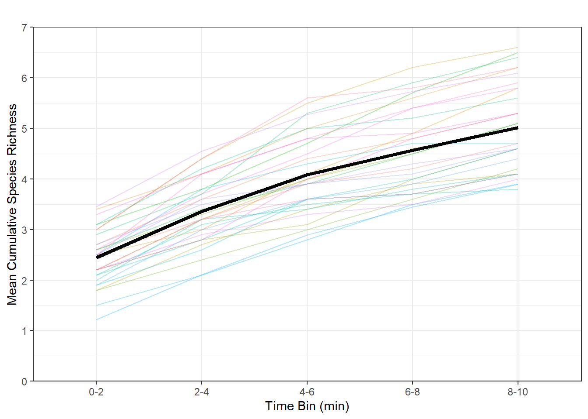

Point Counts
Point count results
Avian communities are often sampled with point count surveys, and for good reason. Point counts in this study will provide information on the grater cavity-nesting bird community which is important for understanding competition and community assemblages as they relate to environmental variables. Below are some preliminary results on each of the four sites with simple models using the Distance package in R. These models vary detection probability by species only and provide estimates on species abundance with associated confidence intervals.
Summary plots for results thus far…
This plot (above) shows the abundance estimates for cavity nesting species at each study site individually. This data represents only March and April 2025.
Totals across sites

The plot (above) shows total cavity nesting bird abundances at each site.
How long should a point count be?
In this study we are doing 10min point counts. It could be that 10min is too long, and most of the species we detect will be detected in a shorter amount of time. If so, we may be able to do shorter point counts but we don’t want to risk lowering our detection of birds that are more difficult to detect (those that are quiet or rare). Let’s look at a simple species accumulation curve…
Warning: Using `size` aesthetic for lines was deprecated in ggplot2 3.4.0.
ℹ Please use `linewidth` instead.Looks like modest accumulation with no sharp increase and plateau seen across plots with some variation between plots. The variation between plots could be random noise.
Point count schedule by month
The following are the scheduled order of point counts to conduct per visit to the site. This ensures that community data obtained isn’t biased by lower or higher detections thoughout the day.
April
Arcadia
Table: Order for Arcadia in April
|location | month|month_name | week|order |
|:--------|-----:|:----------|----:|:-------------|
|ARCA | 4|April | 1|2,3,5,7,6,4,1 |
|ARCA | 4|April | 2|6,4,1,2,3,5,7 |
|ARCA | 4|April | 3|5,7,6,4,1,2,3 |Greenwood
Table: Order for Greenwood in April
|location | month|month_name | week|order |
|:--------|-----:|:----------|----:|:------------------|
|GREN | 4|April | 1|8,11,10,9,12,13,14 |
|GREN | 4|April | 2|14,13,12,11,10,9,8 |
|GREN | 4|April | 3|9,10,11,8,14,13,12 |Livingston
Table: Order for Livingston Place in April
|location | month|month_name | week|order |
|:--------|-----:|:----------|----:|:--------------------------|
|LIVI | 4|April | 1|23,22,18,16,20,21,19,17,15 |
|LIVI | 4|April | 2|19,17,15,16,18,22,23,20,21 |
|LIVI | 4|April | 3|16,20,21,19,17,15,18,22,23 |Tall Timbers
Table: Order for Tall Timbers in April
|location | month|month_name | week|order |
|:--------|-----:|:----------|----:|:--------------------------|
|TTRS | 4|April | 1|32,31,30,28,27,24,25,26,29 |
|TTRS | 4|April | 2|25,26,29,32,31,30,28,27,24 |
|TTRS | 4|April | 3|28,27,24,25,26,29,32,31,30 |May
Arcadia
Table: Order for Arcadia in May
|location | month|month_name | week|order |
|:--------|-----:|:----------|----:|:-------------|
|ARCA | 5|May | 1|3,5,7,6,4,1,2 |
|ARCA | 5|May | 2|4,1,2,3,5,7,6 |
|ARCA | 5|May | 3|7,6,4,1,2,3,5 |Greenwood
Table: Order for Greenwood in May
|location | month|month_name | week|order |
|:--------|-----:|:----------|----:|:------------------|
|GREN | 5|May | 1|8,11,10,9,12,13,14 |
|GREN | 5|May | 2|14,13,12,11,10,9,8 |
|GREN | 5|May | 3|9,10,11,8,14,13,12 |Livingston
Table: Order for Livingston Place in May
|location | month|month_name | week|order |
|:--------|-----:|:----------|----:|:--------------------------|
|LIVI | 5|May | 1|23,22,18,16,20,21,19,17,15 |
|LIVI | 5|May | 2|19,17,15,16,18,22,23,20,21 |
|LIVI | 5|May | 3|16,20,21,19,17,15,18,22,23 |Tall Timbers
Table: Order for Tall Timbers in May
|location | month|month_name | week|order |
|:--------|-----:|:----------|----:|:--------------------------|
|TTRS | 5|May | 1|31,30,28,27,24,25,26,29,32 |
|TTRS | 5|May | 2|26,29,32,31,30,28,27,24,25 |
|TTRS | 5|May | 3|27,24,25,26,29,32,31,30,28 |June
Arcadia
Table: Order for Arcadia in June
|location | month|month_name | week|order |
|:--------|-----:|:----------|----:|:-------------|
|ARCA | 6|June | 1|5,7,6,4,1,2,3 |
|ARCA | 6|June | 2|1,2,3,5,7,6,4 |
|ARCA | 6|June | 3|6,4,1,2,3,5,7 |Greenwood
Table: Order for Greenwood in June
|location | month|month_name | week|order |
|:--------|-----:|:----------|----:|:------------------|
|GREN | 6|June | 1|8,11,10,9,12,13,14 |
|GREN | 6|June | 2|14,13,12,11,10,9,8 |
|GREN | 6|June | 3|9,10,11,8,14,13,12 |Livingston
Table: Order for Livingston Place in June
|location | month|month_name | week|order |
|:--------|-----:|:----------|----:|:--------------------------|
|LIVI | 6|June | 1|23,22,18,16,20,21,19,17,15 |
|LIVI | 6|June | 2|19,17,15,16,18,22,23,20,21 |
|LIVI | 6|June | 3|16,20,21,19,17,15,18,22,23 |Tall Timbers
Table: Order for Tall Timbers in June
|location | month|month_name | week|order |
|:--------|-----:|:----------|----:|:--------------------------|
|TTRS | 6|June | 1|30,28,27,24,25,26,29,32,31 |
|TTRS | 6|June | 2|29,32,31,30,28,27,24,25,26 |
|TTRS | 6|June | 3|24,25,26,29,32,31,30,28,27 |July
Arcadia
Table: Order for Arcadia in July
|location | month|month_name | week|order |
|:--------|-----:|:----------|----:|:-------------|
|ARCA | 7|July | 1|7,6,4,1,2,3,5 |
|ARCA | 7|July | 2|2,3,5,7,6,4,1 |
|ARCA | 7|July | 3|4,1,2,3,5,7,6 |Greenwood
Table: Order for Greenwood in July
|location | month|month_name | week|order |
|:--------|-----:|:----------|----:|:------------------|
|GREN | 7|July | 1|8,11,10,9,12,13,14 |
|GREN | 7|July | 2|14,13,12,11,10,9,8 |
|GREN | 7|July | 3|9,10,11,8,14,13,12 |Livingston
Table: Order for Livingston Place in July
|location | month|month_name | week|order |
|:--------|-----:|:----------|----:|:--------------------------|
|LIVI | 7|July | 1|23,22,18,16,20,21,19,17,15 |
|LIVI | 7|July | 2|19,17,15,16,18,22,23,20,21 |
|LIVI | 7|July | 3|16,20,21,19,17,15,18,22,23 |Tall Timbers
Table: Order for Tall Timbers in July
|location | month|month_name | week|order |
|:--------|-----:|:----------|----:|:--------------------------|
|TTRS | 7|July | 1|28,27,24,25,26,29,32,31,30 |
|TTRS | 7|July | 2|32,31,30,28,27,24,25,26,29 |
|TTRS | 7|July | 3|25,26,29,32,31,30,28,27,24 |August
Arcadia
Table: Order for Arcadia in August
|location | month|month_name | week|order |
|:--------|-----:|:----------|----:|:-------------|
|ARCA | 8|August | 1|6,4,1,2,3,5,7 |
|ARCA | 8|August | 2|3,5,7,6,4,1,2 |
|ARCA | 8|August | 3|1,2,3,5,7,6,4 |Greenwood
Table: Order for Greenwood in August
|location | month|month_name | week|order |
|:--------|-----:|:----------|----:|:------------------|
|GREN | 8|August | 1|8,11,10,9,12,13,14 |
|GREN | 8|August | 2|14,13,12,11,10,9,8 |
|GREN | 8|August | 3|9,10,11,8,14,13,12 |Livingston
Table: Order for Livingston Place in August
|location | month|month_name | week|order |
|:--------|-----:|:----------|----:|:--------------------------|
|LIVI | 8|August | 1|23,22,18,16,20,21,19,17,15 |
|LIVI | 8|August | 2|19,17,15,16,18,22,23,20,21 |
|LIVI | 8|August | 3|16,20,21,19,17,15,18,22,23 |Tall Timbers
Table: Order for Tall Timbers in August
|location | month|month_name | week|order |
|:--------|-----:|:----------|----:|:--------------------------|
|TTRS | 8|August | 1|27,24,25,26,29,32,31,30,28 |
|TTRS | 8|August | 2|31,30,28,27,24,25,26,29,32 |
|TTRS | 8|August | 3|26,29,32,31,30,28,27,24,25 |